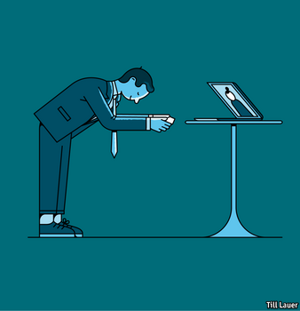

2021-02-25T04:34:01+00:00
亚洲企业文化
这是我的二维码
名片上线
在亚洲，等人们交换完名片后，会议才算正式开始。这不仅仅是一种礼节。双手接过名片，细看一番，留意递上名片者的职衔和其他透露地位的东西——这在任何等级森严的商业文化中都是非常重要的信息。在日本，掌握这一套礼仪（例如需要鞠躬到多深）极为重要，所以会有不计其数的书籍和课程承诺把职场菜鸟变为“名刺交換”（交换名片）的高手。新加坡商业人脉拓展公司CEO Asia的林智雄说，如果一个新认识的人没给他名片，“那我就不会记得他们。”
然而，新冠疫情已经让名片“生命垂危”。白领们纷纷居家办公，商务午餐被取消，会议转到网上，人脉拓展活动难以进行。跨国印刷公司Vistaprint的名片订单在去年3月底至4月初间暴跌了70%，至今未完全恢复。林智雄以往每个月递出200张左右的名片。新加坡去年3月封城后的六个月里，他估计只给出了五张。“我都不记得名片长什么样了，”一位常驻新加坡的英国银行家说，“你怎么给名片消毒啊？”
但是，即使会议搬到了Zoom上，弄清楚谁是谁仍然很有帮助。因此，企业正在为社交疏离时代重塑名片。日本长屋印刷（Nagaya）把名片印在了口罩上（生动演绎了日本人把名片比作脸面的说法）。在推出“名刺”口罩后，长屋印刷的网站访问量激增了65,000%。
另一家日本公司Sansan帮助公司分类管理扫描下来的名片，这样老板就可以看到哪些员工结识了新联系人。Sansan还提供“虚拟名片”。用户会收到二维码，可用作虚拟背景显示在视频会议应用上。用手机镜头扫描二维码就会显示用户的数字名片。自去年6月推出以来，已有约4300家公司开始使用Sansan的虚拟名片。
但正在使用Sansan虚拟名片的林智雄并不打算就此扔掉纸质名片。人们往往在会议开始后或结束时才交换虚拟名片，这让与会者不得不在会议期间问及对方具体负责什么。“这有时有点不礼貌。”他说。在新加坡，许多人显然也偏爱纸质名片。过去两个月，随着更多人恢复在线下开会，印刷公司ExpressPrint的销售额有所回升。新加坡主权财富基金淡马锡的公共事务主管斯蒂芬·福肖（Stephen Forshaw）表示，他最近加印了名片，“很久没干这件事了”。就连Sansan的东南亚业务主管千住洋也还会在钱包里放一些纸质名片，“以防万一嘛”。
2021-02-25T04:34:01+00:00
Asian corporate culture
Here’s my QR code
Business cards are going online
IN ASIA MEETINGS do not begin until business cards have been swapped. It is no mere formality. Accept the card with two hands and carefully examine it, noting the giver’s title and other indicators of rank—essential information in any strongly hierarchical business culture. It is so important to master this ritual in Japan (just how deep does one bow?) that numerous books and courses promise to transform bumbling novices into
Yet the pandemic has put the business card on life support. Networking is difficult when white-collar workers have fled to home offices, business lunches have been cancelled and conferences have migrated online. Orders for business cards from Vistaprint, a multinational printing company, plummeted by 70% in late March and early April and have yet to recover fully. Mr Lim normally hands out about 200 cards a month. In the six months following Singapore’s lockdown in March, he reckons he dispensed about five. “I’ve forgotten what business cards look like,” remarks a British banker based in Singapore. “How do you sanitise them?”
But it is still helpful to know who is who at meetings, even when they take place on Zoom. Companies are therefore reimagining the business card for the era of social distancing. Nagaya, a Japanese firm, prints them on face masks (a literal interpretation of a Japanese metaphor that likens business cards to one’s face). After the launch of the “Meishi” mask, traffic to Nagaya’s website surged by 65,000%.
Sansan, another Japanese firm, allows companies to sort scanned business cards so bosses can see which employees have made new contacts. It also offers “virtual cards”. Users receive QR codes which they display as virtual backgrounds on video-conferencing apps. Scanning the code with a phone camera will summon the user’s digital business card. Some 4,300 companies have begun using Sansan’s virtual cards since they launched in June.
But Mr Lim, who uses Sansan’s virtual cards, does not plan on binning the paper version just yet. People tend to exchange virtual cards after meetings have started or as they end, forcing participants to ask who does what during the meeting itself. “That’s sometimes a little bit rude,” he says. Many others in Singapore are evidently fond of paper cards, too. Sales at ExpressPrint, a printing company, have picked up in the past two months, as more people resume in-person meetings. Stephen Forshaw, head of public affairs at Temasek, Singapore’s sovereign-wealth fund, says that he recently topped up his supply of cards for the “first time in a long time”. Even Edward Senju, the head of Sansan’s operations in South-East Asia, still keeps some in his wallet, “just in case”. ■
2021-02-25T04:34:01+00:00
亞洲企業文化
這是我的二維碼
名片上線
在亞洲，等人們交換完名片後，會議才算正式開始。這不僅僅是一種禮節。雙手接過名片，細看一番，留意遞上名片者的職銜和其他透露地位的東西——這在任何等級森嚴的商業文化中都是非常重要的信息。在日本，掌握這一套禮儀（例如需要鞠躬到多深）極為重要，所以會有不計其數的書籍和課程承諾把職場菜鳥變為“名刺交換”（交換名片）的高手。新加坡商業人脈拓展公司CEO Asia的林智雄說，如果一個新認識的人沒給他名片，“那我就不會記得他們。”
然而，新冠疫情已經讓名片“生命垂危”。白領們紛紛居家辦公，商務午餐被取消，會議轉到網上，人脈拓展活動難以進行。跨國印刷公司Vistaprint的名片訂單在去年3月底至4月初間暴跌了70%，至今未完全恢復。林智雄以往每個月遞出200張左右的名片。新加坡去年3月封城後的六個月里，他估計只給出了五張。“我都不記得名片長什麼樣了，”一位常駐新加坡的英國銀行家說，“你怎麼給名片消毒啊？”
但是，即使會議搬到了Zoom上，弄清楚誰是誰仍然很有幫助。因此，企業正在為社交疏離時代重塑名片。日本長屋印刷（Nagaya）把名片印在了口罩上（生動演繹了日本人把名片比作臉面的說法）。在推出“名刺”口罩後，長屋印刷的網站訪問量激增了65,000%。
另一家日本公司Sansan幫助公司分類管理掃描下來的名片，這樣老闆就可以看到哪些員工結識了新聯繫人。Sansan還提供“虛擬名片”。用戶會收到二維碼，可用作虛擬背景顯示在視頻會議應用上。用手機鏡頭掃描二維碼就會顯示用戶的數字名片。自去年6月推出以來，已有約4300家公司開始使用Sansan的虛擬名片。
但正在使用Sansan虛擬名片的林智雄並不打算就此扔掉紙質名片。人們往往在會議開始後或結束時才交換虛擬名片，這讓與會者不得不在會議期間問及對方具體負責什麼。“這有時有點不禮貌。”他說。在新加坡，許多人顯然也偏愛紙質名片。過去兩個月，隨着更多人恢復在線下開會，印刷公司ExpressPrint的銷售額有所回升。新加坡主權財富基金淡馬錫的公共事務主管斯蒂芬·福肖（Stephen Forshaw）表示，他最近加印了名片，“很久沒幹這件事了”。就連Sansan的東南亞業務主管千住洋也還會在錢包里放一些紙質名片，“以防萬一嘛”。